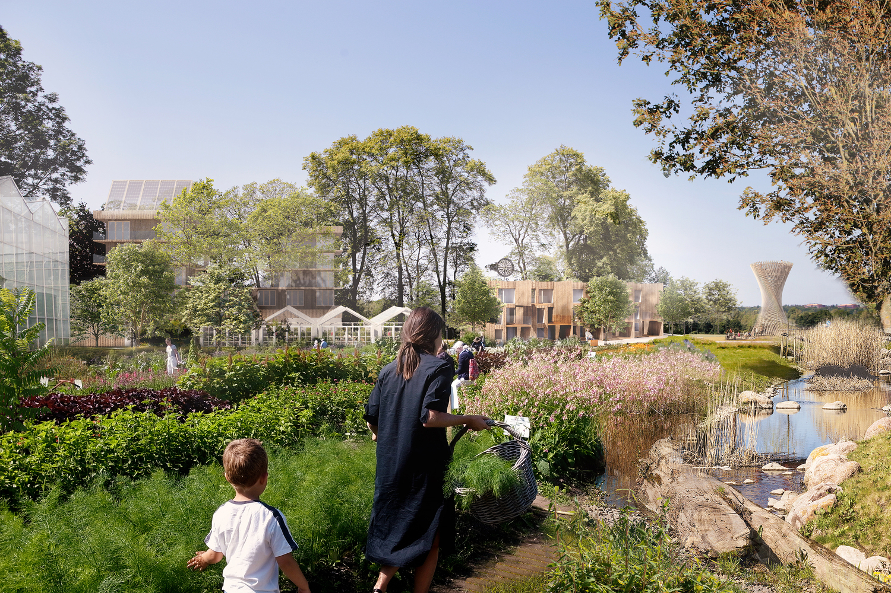
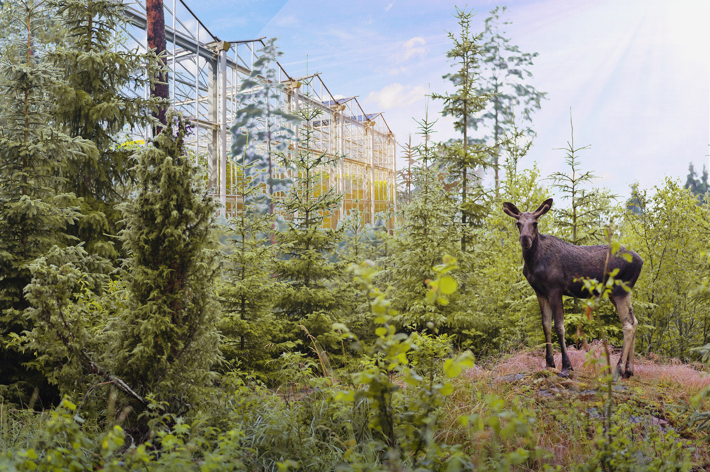
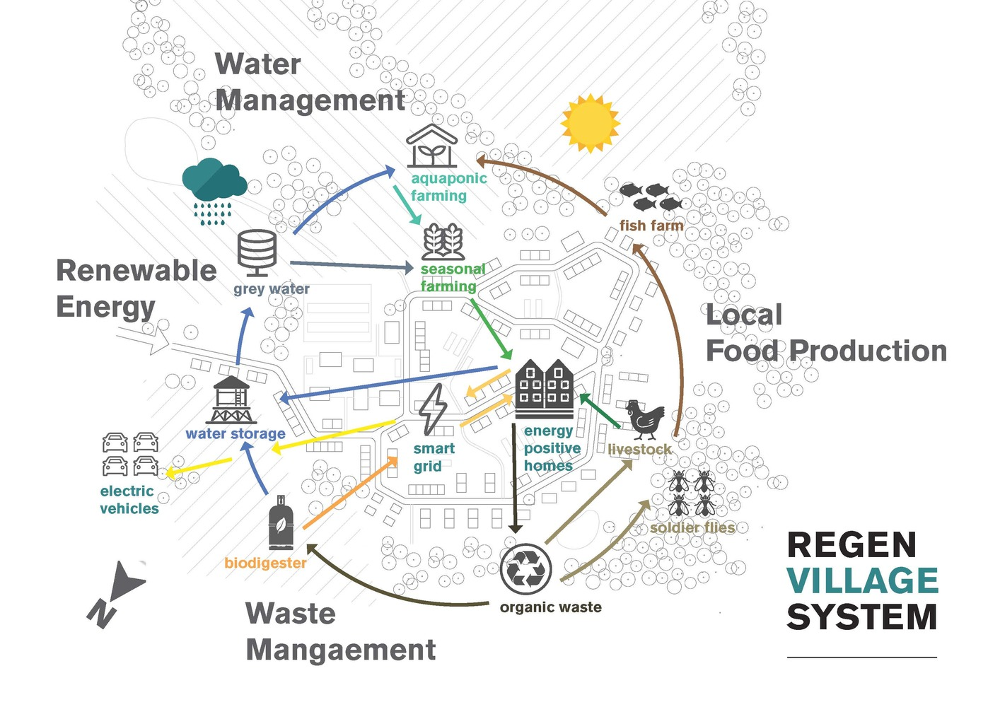

- Written by Christele Harrouk
White Arkitekter, in collaboration with Silicon Valley-based ReGen Villages, have joined forces to create fully circular, self-sufficient and resilient communities in Sweden. Inspired by computer games, the project puts in place organic food production, locally produced and stored energy, comprehensive recycling, and climate positive buildings.

In order to tackle the challenges that cities have to face nowadays, like climate crisis, rapid urbanization and housing shortage, White Arkitekter, and ReGen Villages Sweden, a subsidiary of the Holland-based company ReGen Villages Holding, have teamed up to develop self-sufficient communities in and around cities. While White Arkitekter is in charge of the overall site planning and the design of energy-positive buildings, including housing, ReGen Villages has been conducting, for the past 4 years, meetings with Swedish municipalities, landowners, property developers, and stakeholders.

Meeting the Global Goals for Sustainable Development, the project, set to start in 2020, aims to “make our cities and communities less vulnerable by lessening the load on central infrastructure”. Based on the latest climate-smart technologies which are adapted to site-specific conditions, a ReGen Village introduces new technologies for food, energy, and water, “combined in an unprecedented way into a single circular system with the help of Village OS”. Through AI technology and machine learning, food will be supplied from vertical farming and aquaponics, energy will be secured from solar panels and biogas produced from local waste, and water is collected, cleaned and reused.

Using AI on a community level, the system enables the development of similar self-sufficient communities around the globe. Inspired by “smart homes” structures, Village OS can in a similar way make entire communities smart. Actually, all “neighborhood systems can be run and balanced digitally”. The size of a ReGen village is approximately 250 000 square meters, with 25 percent of the area occupied by buildings, 250–300 of which are housing. The rest of the area is used for the different systems, such as farming and food production, energy production and water management.
SOURCE: ARCHDAILY